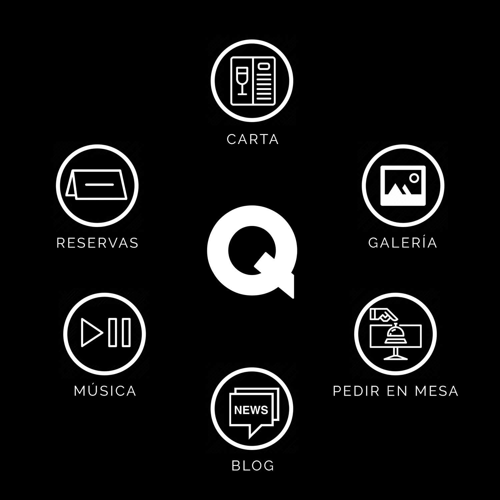

<ion-header>
  <ion-toolbar>
    <ion-buttons slot="start">
      <ion-menu-button></ion-menu-button>
    </ion-buttons>
    <ion-title>
      List
    </ion-title>
  </ion-toolbar>
</ion-header>

<ion-content>
  <div align="center" [hidden]="menu_gif_hidden">
    
  </div>

  <ion-content color="dark" [hidden]="!menu_gif_hidden">
    
      <button id="pedir" routerLink="/soon" style="margin-left:71%; margin-top: -42%; float:left; border-radius: 50%; width: 61px; height: 61px; z-index: 3; position: relative; background-color: transparent;"></button>
      <button id="galeria" routerLink="/soon" style="margin-left:73%; margin-top: -72%; float:left; border-radius: 50%; width: 61px; height: 61px; z-index: 3; position: relative; background-color: transparent;"></button>
      <button id="carta" routerLink="/cartas" style="margin-left:42.5%; margin-top: -93%; float:left; border-radius: 50%; width: 61px; height: 61px; z-index: 3; position: relative; background-color: transparent;"></button>
      <button id="reservas" routerLink="/soon" style="margin-left:11.5%; margin-top: -72%; float:left; border-radius: 50%; width: 61px; height: 61px; z-index: 3; position: relative; background-color: transparent;"></button>
      <button id="musica" routerLink="/soon" style="margin-left:13.2%; margin-top: -42%; float:left; border-radius: 50%; width: 61px; height: 61px; z-index: 3; position: relative; background-color: transparent;"></button>
      <button id="blog"  routerLink="/soon"style="margin-left:42.5%; margin-top: -27%; float:left; border-radius: 50%; width: 61px; height: 61px; z-index: 3; position: relative; background-color: transparent;"></button>
   
  
  </ion-content>
</ion-content>
